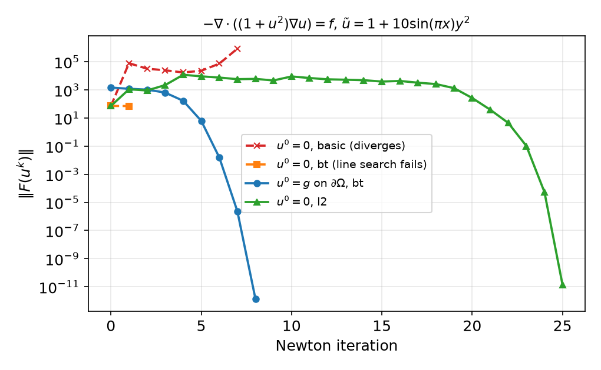
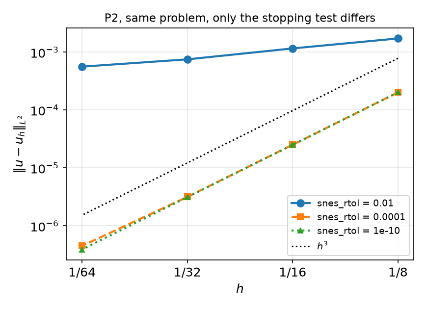
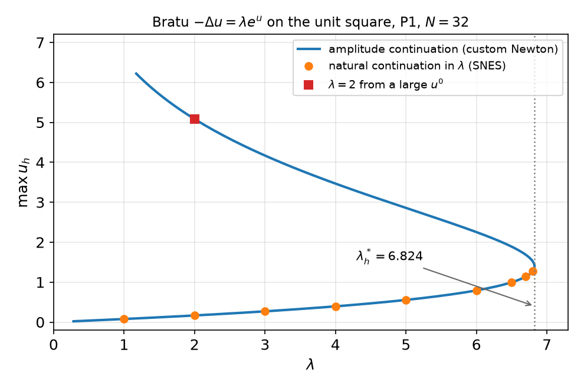

AI-based Materials and Process Simulation I
Week 09 — Nonlinear Problems II: Well-posedness · Globalisation · Continuation · PETSc SNES in DOLFINx · HW8
Process Systems Laboratory
Department of Chemical and Biomolecular Engineering, SeoulTech
Today
| Part | Topic | Time |
|---|---|---|
| Quiz | Week 8 (Gâteaux derivative, Newton step, convergence, parallel sign error) | 10 min |
| A | Theory — when does a nonlinear problem have a (unique) solution; Newton–Kantorovich; line search; continuation; inexact Newton | 45 min |
| B | PETSc SNES in DOLFINx 0.11 — NonlinearProblem, options, reasons, line search, stopping tests |
45 min |
| C | Continuation in practice — Bratu’s problem, a fold, a custom Newton solver that passes it | 35 min |
| D | LLM pitfalls with SNES · HW8 · proposal feedback | 15 min |
Lab notebook: W09_lab.ipynb · Homework: W09_HW8.ipynb (due before Week 10) · Proposal feedback: returned today
Week 8 in one slide
F(u;v)=0\ \ \forall v\in V_0,\qquad J(u^k;\delta u,v)=F(u^k;v),\qquad u^{k+1}=u^k-\delta u,\qquad \delta u=0\ \text{on }\Gamma_D .
| What we saw | Number (P1, N=32, q=1+u^2) |
|---|---|
| Newton from the q=1 solution | 5 iterations, \|\delta u_{k+1}\|/\|\delta u_k\|^2\approx0.02–0.035 |
| Picard (no q'(u) term) | 15 iterations, linear |
| iterations vs N | constant (mesh independence) |
| MMS rates of the converged u_h | P1 2.00, P2 3.00 |
Open questions from Week 8:
- Does the nonlinear problem have a solution at all — and only one?
- What if u^0 is not close? (zero guess: 8 iterations with \|\delta u_1\|=62)
- Do we have to write the loop ourselves every time?
Part A — Theory
§A1 Existence and uniqueness: monotone operators
Lax–Milgram needs a bilinear form. A nonlinear residual F(u;v)=\langle\mathcal A(u),v\rangle-\ell(v) defines an operator \mathcal A:V\to V'.
Theorem (Zarantonello) — strongly monotone, Lipschitz operators
Let V be a Hilbert space and \mathcal A:V\to V' satisfy, for all u,w\in V, \langle\mathcal A(u)-\mathcal A(w),u-w\rangle\ \ge\ \alpha\|u-w\|_V^2,\qquad \|\mathcal A(u)-\mathcal A(w)\|_{V'}\ \le\ L\|u-w\|_V . Then \mathcal A(u)=\ell has exactly one solution for every \ell\in V', and \|u-w\|_V\le\alpha^{-1}\|\mathcal A(u)-\mathcal A(w)\|_{V'}.
- For a linear \mathcal A this is Lax–Milgram (coercivity \alpha, continuity L).
- Proof: u\mapsto u-\rho R^{-1}(\mathcal A(u)-\ell) is a contraction for 0<\rho<2\alpha/L^2 (R = Riesz map) — a Picard-type iteration.
- Typical example: a flux that depends on the gradient, \mathcal A(u)=-\nabla\cdot\mathbf a(\nabla u) with (\mathbf a(\xi)-\mathbf a(\eta))\cdot(\xi-\eta)\ge\alpha|\xi-\eta|^2 (regularised power-law fluids, nonlinear elasticity with small strains).
§A2 Two model problems that are not monotone
Quasilinear diffusion -\nabla\cdot(q(u)\nabla u)=f (Week 8)
q depends on u, not \nabla u — not strongly monotone in general. But with q\ge q_0>0 use the Kirchhoff transform K(u)=\int_0^u q(s)\,ds,\qquad \nabla K(u)=q(u)\nabla u . Then w=K(u) solves the linear problem -\Delta w=f, w=K(g) on \partial\Omega; K is strictly increasing, so u=K^{-1}(w) exists and is unique.
(Works for q=q(u) with Dirichlet data. Not for q(x,u), not for Robin conditions.)
Bratu / Frank-Kamenetskii -\Delta u=\lambda e^u, u=0
Steady thermal explosion: heat release \propto e^{u} (linearised Arrhenius), conduction to a cold wall; \lambda = Frank-Kamenetskii parameter.
- the reaction term helps u grow — the opposite of monotone;
- there is a critical \lambda^*: two solutions for 0<\lambda<\lambda^*, one at \lambda^*, none for \lambda>\lambda^* (no steady state: ignition);
- at \lambda^* the Jacobian J(u^*)=-\Delta-\lambda^*e^{u^*} is singular — a fold (turning point).
Unit square: \lambda^*\approx6.80812 (literature value). We will reproduce it in Part C.
§A3 How far does Newton reach? (Newton–Kantorovich)
Theorem (Newton–Kantorovich, classical form)
Suppose \|J(u^0)^{-1}\|\le\beta, \|J(v)-J(w)\|\le\gamma\|v-w\| near u^0, and let \eta=\|\delta u^0\|=\|J(u^0)^{-1}F(u^0)\| be the first correction. If h_0:=\beta\gamma\,\eta\le\tfrac12 , then the Newton iterates stay in a ball of radius \approx2\eta around u^0 and converge to a solution u^*, unique in that ball — quadratically when h_0<\tfrac12.
Read it as: (conditioning × nonlinearity) × (size of the first step) must be small.
- Large data or a poor guess ⇒ big \|\delta u^0\| ⇒ no guarantee (Week 8: u^0=0 gave \|\delta u^0\|=62).
- Near a fold J^{-1} blows up ⇒ \beta blows up ⇒ the basin shrinks and iteration counts grow (Bratu below: 3 → 5 iterations as \lambda\to\lambda^*).
- The bound is in function-space norms — another way to see why the iteration count does not depend on N.
Two remedies: make the step smaller (damping / line search) or make \|\delta u^0\| smaller (continuation).
§A4 Globalisation: line search on a merit function
Merit function \phi(u)=\tfrac12\|F(u)\|^2 (discrete residual vector). Newton direction d=-J^{-1}F: \nabla\phi\cdot d=(J^\top F)\cdot(-J^{-1}F)=-\|F\|^2<0 \quad\Rightarrow\quad d \text{ is a descent direction.}
Backtracking (Armijo): try \alpha=1,\ \alpha_1,\ \alpha_2,\dots until \|F(u+\alpha d)\|^2\le(1-2c\,\alpha)\|F(u)\|^2 (c=10^{-4}); take u\leftarrow u+\alpha d.
PETSc snes_linesearch_type |
step length \alpha |
|---|---|
basic (= none) |
always 1 — plain Newton |
bt (default for newtonls) |
backtracking with quadratic/cubic interpolation of \phi |
l2 |
secant search for a minimum of \|F(u+\alpha d)\|_2^2 |
cp |
critical point of F\cdot d (meant for gradients of an energy) |
Caveats: (i) the descent property needs d to be the Newton direction of the same F that \phi measures; (ii) \phi can have local minima where J is singular — the line search then fails (DIVERGED_LINE_SEARCH); (iii) near the solution \alpha=1 is accepted and quadratic convergence returns.
§A5 Continuation
Embed the problem in a family F(u;\lambda)=0 with an easy member (\lambda_0) and the target (\lambda_1): load, amplitude of the data, Reynolds number, \beta in k=e^{\beta u}, …
Natural-parameter continuation
\lambda_0<\lambda_1<\dots<\lambda_n; solve F(u;\lambda_{j})=0 by Newton starting from u(\lambda_{j-1}) (or from a predictor u_{j-1}+(\lambda_j-\lambda_{j-1})\,\partial_\lambda u). Halve the step if Newton fails.
- Each step has a small \|\delta u^0\| — Kantorovich’s h_0 stays small.
- Fails at a fold: at \lambda^*, J is singular and for \lambda>\lambda^* there is no nearby solution — no step size helps.
- Fix — change the parameter. Treat \lambda as an unknown and prescribe something that increases monotonically along the branch, e.g. \int_\Omega u\,dx=m (amplitude continuation) or the arc length (pseudo-arclength continuation): \begin{pmatrix}J & F_\lambda\\ \ell^\top & 0\end{pmatrix}\begin{pmatrix}\delta u\\ \delta\lambda\end{pmatrix}=\begin{pmatrix}F\\ c\end{pmatrix},\qquad c=\int_\Omega u\,dx-m,\quad \ell_i=\int_\Omega\phi_i\,dx . The bordered matrix is non-singular at the fold even though J is not.
§A6 Inexact Newton
For large problems the linear system J\delta u=F is solved iteratively, only to a tolerance: \|J(u^k)\,\delta u-F(u^k)\|\le\eta_k\,\|F(u^k)\|\qquad(\text{forcing term }\eta_k).
| forcing term | Newton convergence |
|---|---|
| \eta_k=\eta<1 fixed | linear |
| \eta_k\to0 | superlinear |
| \eta_k=O(\|F(u^k)\|) | quadratic |
| Eisenstat–Walker: \eta_k from how well the last linear model predicted \|F\| | loose far away, tight near the solution |
Solving J\delta u=F to 10^{-10} in the first iterations is wasted work: the linear model is wrong there anyway. PETSc: snes_ksp_ew. Numbers in §B5.
Part B — PETSc SNES in DOLFINx 0.11
§B1 NonlinearProblem
from dolfinx.fem.petsc import NonlinearProblem
uh = fem.Function(V) # unknown and initial guess
F = q(uh) * ufl.inner(ufl.grad(uh), ufl.grad(v)) * ufl.dx - f * v * ufl.dx
problem = NonlinearProblem(F, uh, bcs=[bc], petsc_options_prefix="nls_", # prefix is mandatory
petsc_options={"snes_type": "newtonls", "snes_linesearch_type": "bt",
"snes_rtol": 1e-10, "snes_atol": 1e-12, "snes_max_it": 50,
"ksp_type": "preonly", "pc_type": "lu"})
problem.solve() # updates uh, returns uh
reason = problem.solver.getConvergedReason() # problem.solver is a petsc4py SNES
assert reason > 0, f"SNES failed, reason {reason}"- J is
ufl.derivative(F, uh)unless you passJ=(e.g. a Picard matrix, or a hand-written Jacobian). - Inside, SNES calls back into DOLFINx:
assemble_residual(assemble, lift,ghostUpdate,set_bc) andassemble_jacobian— the Week 8 loop. solve()does not raise when SNES fails. Check the reason, or pass"snes_error_if_not_converged": True(→PETSc.Error, code 91).- Week 8’s
NewtonSolverstill imports but is deprecated; it does not work with the newNonlinearProblem(AttributeError: ... 'a').
§B2 Defaults, reasons, monitors
With no petsc_options (measured, P1, N=32): newtonls · line search bt · rtol 10^{-8}, atol 10^{-50}, stol 10^{-8}, max_it 50 · KSP gmres + bjacobi (an iterative linear solver: 4 Newton steps needed about 100 GMRES iterations).
| reason | meaning |
|---|---|
| 2 | CONVERGED_FNORM_ABS \|F\|< atol |
| 3 | CONVERGED_FNORM_RELATIVE \|F\|< rtol\cdot\|F(u^0)\| |
| 4 | CONVERGED_SNORM_RELATIVE \|\delta u\|< stol\cdot\|u\| |
| −3 | DIVERGED_LINEAR_SOLVE |
| −4 | DIVERGED_FUNCTION_NANORINF |
| −5 | DIVERGED_MAX_IT |
| −6 | DIVERGED_LINE_SEARCH |
| −9 | DIVERGED_DTOL (\|F\| grew too much) |
or "snes_monitor": None, "snes_converged_reason": None in petsc_options (prints from rank 0).
snes_max_it = 2 on the Week 8 problem: reason −5, solve() returns normally, L^2 error 2.6\times10^{-3} instead of 3.8\times10^{-4} — nothing tells you unless you look.
§B3 Boundary conditions inside SNES
DOLFINx’s residual callback lifts with the current iterate and sets the boundary rows to F_i=u_i-g_i\quad (i\in\Gamma_D),\qquad\text{Jacobian row}=e_i^\top . So u^0 need not satisfy the Dirichlet data: the first full Newton step puts u=g on \Gamma_D.
Week 8 problem, P1, N=32, tight tolerances:
| u^0 | reason | iterations | \|F(u^k)\| |
|---|---|---|---|
| 0 everywhere | 3 | 4 | 19, 0.37, 1.5e-2, 3.8e-5, 2.9e-10 |
| 0 inside, g on \partial\Omega | 2 | 8 | 24, 21, 19, 12, 4.5, 0.26, 1.1e-3, 2.5e-8, 2.3e-14 |
Why is the “wrong” guess better here? At u=0: q(0)=1, q'(0)u=0, so J(0) is the Laplacian and the first step is the q=1 linear solve — exactly Week 8’s good initial guess. Same L^2 error (3.778\times10^{-4}) in both cases. But see the next slide.
§B4 Line search and initial guess — a harder problem
Same equation, \tilde u=1+10\sin(\pi x)y^2 (ten times the Week 8 amplitude). P1, N=32:
| u^0 | basic |
bt |
l2 |
|---|---|---|---|
| 0 everywhere | −9 | −6 | 25 |
| 0 inside, g on \partial\Omega | −9 | 8 | 11 |
| q=1 solution | 18 | 48 | 30 |
continuation A=2,\dots,10 (basic) |
5 × 6 |
Newton iterations; negative = SNES reason (failure). No option wins everywhere; continuation costs more steps, but each is mild. All converged runs: the same L^2 error 8.02\times10^{-3}.

- u^0=0: the residual vector holds u_B-g_B and a lifting term -J_{IB}(u_B-g_B) — not exactly the function whose Newton direction was computed, so descent is not guaranteed (§A4 (i)). Start from u^0=g on \Gamma_D:
fem.set_bc(uh.x.array, [bc]).
§B5 The linear solver inside Newton
Week 8 problem, P1, u^0=g on \partial\Omega:
| N | default gmres+bjacobi |
gmres+gamg, ksp_rtol 10^{-10} |
gmres+gamg + Eisenstat–Walker |
|---|---|---|---|
| 32 | 8 Newton / 201 linear | 8 / 112 | 11 / 26 |
| 64 | 8 / 425 | 8 / 116 | 11 / 20 |
| 128 | 8 / 909 | 8 / 125 | 10 / 28 |
- The Newton count is mesh independent in every column; the linear count is not with
bjacobi(×2 per refinement — Week 5’s \kappa\sim h^{-2}). - Algebraic multigrid makes the linear count mesh independent; Eisenstat–Walker cuts it by 4–6× at the price of a few more Newton steps.
- For this course (2D, \lesssim10^5 DOFs):
preonly+lu(MUMPS in parallel) is the safe choice. Say so explicitly — the default is not LU.
§B6 Stopping tests and the discretisation error
snes_rtol is relative to \|F(u^0)\| — it depends on the guess and on the scaling of the equation. Same problem, P2, u^0=g on \partial\Omega:
snes_rtol |
its | L^2 rates, N=8\to64 |
|---|---|---|
| 10^{-2} | 4 | 0.57, 0.63, 0.42 |
| 10^{-4} | 5 | 3.01, 2.99, 2.81 |
| 10^{-6} | 5–6 | 3.01, 3.00, 2.79 |
| 10^{-10} | 6 | 3.01, 3.00, 3.00 |
P1 with 10^{-2}: rates -0.02,\ 4.03,\ 1.96 — reason 3 (“converged”) every time.

Rule: algebraic error ≪ discretisation error on the finest mesh — tight rtol, an atol in the units of F, and check \|F\| at exit, not just the reason.
Part C — Continuation in Practice
§C1 A continuation loop with SNES
lam = fem.Constant(msh, 0.0) # a Constant: its value is read at every assembly
F = ufl.inner(ufl.grad(uh), ufl.grad(v)) * ufl.dx - lam * ufl.exp(uh) * v * ufl.dx
problem = NonlinearProblem(F, uh, bcs=[bc0], petsc_options_prefix="bratu_", petsc_options=opts)
for L in lam_values:
lam.value = L # uh still holds the previous solution = initial guess
problem.solve()
if problem.solver.getConvergedReason() <= 0:
... # restore the last good uh, halve the step — or stop- Build the problem once; change
Constant.valueand re-solve. The previous solution is the initial guess (zero-order predictor). - A Python
floatinstead of aConstantis compiled into the form: the loop then solves the same problem every time (§D1). - After a failure
uhholds the last (bad) iterate: keep a copy of the last converged state.
§C2 Bratu: natural continuation runs into the fold
-\Delta u=\lambda e^u on the unit square, u=0, P1, N=32, SNES newtonls/bt, continuation in \lambda:
| \lambda | 1 | 2 | 3 | 4 | 5 | 6 | 6.5 | 6.7 | 6.8 | 6.85 |
|---|---|---|---|---|---|---|---|---|---|---|
| iterations | 3 | 3 | 3 | 3 | 3 | 4 | 4 | 4 | 5 | −6 |
| \max u_h | 0.078 | 0.167 | 0.270 | 0.395 | 0.556 | 0.794 | 0.997 | 1.139 | 1.277 | — |
- The iteration count grows as J approaches singularity (§A3).
- From u^0=0: \lambda=6.8 converges (7 its, same u_h); \lambda=7:
basic→ −9,bt→ −6. No line search, no step size helps — there is no solution. - \lambda=2 from u^0=A\cdot16xy(1-x)(1-y): A=2 → the lower solution (\max u=0.167); A=5 → another solution, \max u=5.08; A=10 → −6. Which solution Newton finds depends on u^0.
§C3 Passing the fold: a custom Newton solver
Unknowns (u,\lambda), constraint \int_\Omega u\,dx=m, step in m. Block elimination of the bordered system (§A5) with one factorisation of J: J a=F,\quad Jz=F_\lambda,\qquad \delta\lambda=\frac{\ell\cdot a-c}{\ell\cdot z},\qquad \delta u=a-\delta\lambda\,z .
Fc, Jc = fem.form(F), fem.form(ufl.derivative(F, uh, w))
Flc = fem.form(-ufl.exp(uh) * v * ufl.dx) # dF/dlam
ell = assemble_vector(fem.form(v * ufl.dx)); ... # d(int u)/du, ghostUpdate, set_bc
for it in range(max_it):
# assemble J (bc0), F and F_lam (lift, ghostUpdate, set_bc) — as in Week 8
c = comm.allreduce(fem.assemble_scalar(fem.form(uh * ufl.dx)), op=MPI.SUM) - m
ksp.solve(b, a.x.petsc_vec); ksp.solve(bl, z.x.petsc_vec) # same LU factors, two right-hand sides
dlam = (ell.dot(a.x.petsc_vec) - c) / ell.dot(z.x.petsc_vec) # collective dot products
a.x.petsc_vec.axpy(-dlam, z.x.petsc_vec) # du = a - dlam z
uh.x.petsc_vec.axpy(-1.0, a.x.petsc_vec); uh.x.scatter_forward()
lam.value = float(lam.value) - dlamJ is singular only at the fold; the formula is well defined on both sides of it and the bordered system is regular. ≤ 4 Newton iterations per step along the whole branch (step \Delta m=0.01).
§C4 The bifurcation diagram — and a benchmark

Fold \lambda^*_h (vertex of a parabola through the three largest \lambda along the branch):
| N | \lambda^*_h | error | |
|---|---|---|---|
| P1 | 16 | 6.87293 | 6.5e-2 |
| P1 | 32 | 6.82430 | 1.6e-2 |
| P1 | 64 | 6.81217 | 4.0e-3 |
| P2 | 16 | 6.80821 | 8.9e-5 |
| P2 | 32 | 6.80813 | 7.1e-6 |
Literature: \lambda^*=6.80812. P1 error ratio 4.0 → O(h^2) — like an eigenvalue (J singular at the fold), rate 2k, not k+1. P2 ratio 12.5: the fit in m (\Delta m=0.01) limits it.
A benchmark with a known number — what your project needs besides MMS. HW8 does the same in 1D, where \lambda^* can be computed exactly.
Part D — LLMs and SNES · HW8
§D1 Where LLM-generated SNES code goes wrong
| Kind | What it looks like | Symptom (0.11, measured) |
|---|---|---|
| No reason check | problem.solve() and carry on |
reason −5 with snes_max_it=2: 7× larger error, no message |
| 0.10 / 0.9 API | n, converged = problem.solve() |
NotImplementedError: Cannot take length of non-vector expression. |
NewtonSolver(comm, problem) |
deprecation warning, then AttributeError |
|
Parameter as float |
lam = 1.0 in the form, then for lam in (1, 3, 6, 9): problem.solve() |
same \max u=0.0778 for every \lambda — reason 2 each time |
| Default linear solver | no ksp_type/pc_type |
GMRES + block Jacobi: linear iterations ×2 per refinement |
| Loose tolerance | snes_rtol: 1e-2 “for speed” |
MMS rates 0.4–0.6 instead of 3 |
| Guess vs BCs | u^0=0 with large Dirichlet data and bt |
−6 after one iteration |
| Hand Jacobian | J= with a missing term |
linear convergence (Week 8 Taylor test) |
Verification habit: print the reason and the \|F\| history; run once with -np 2; run the convergence study with a tolerance you have tested.
HW8 — nonlinear MMS with SNES, due before the Week 10 lecture
W09_HW8.ipynb (100 pts)
- Q1 (20) Theory: the Kirchhoff transform for a temperature-dependent conductivity; the one-dimensional Bratu problem and its exact critical parameter
- Q2 (40)
NonlinearProblemfor -\nabla\cdot(e^{u}\nabla u)=f: MMS with P1/P2, SNES diagnostics, a Kirchhoff cross-check, and the stopping tolerance - Q3 (20) One-dimensional Bratu: natural continuation, the custom Newton solver from the lab, \lambda^*_h against the exact value
- Q4 (20) LLM debugging: a continuation script with four bugs
Rules as always: Restart session and run all, -np 2 where stated, the AI-usage log, numbers only from your own cells.
Proposal feedback is handed back today. Revise your verification plan before the progress check.
Summary
| Concept | Key idea | DOLFINx / PETSc |
|---|---|---|
| Well-posedness | Zarantonello; Kirchhoff for q(u); folds for Bratu | — |
| Newton–Kantorovich | \beta\gamma\|\delta u^0\|\le\frac12: conditioning × nonlinearity × first step | iteration count vs data, near folds |
| Line search | Newton direction = descent direction for \frac12\|F\|^2 | snes_linesearch_type |
| Continuation | small steps in a parameter; folds need a different parameter | fem.Constant + loop; bordered Newton |
| SNES | NonlinearProblem(F, uh, bcs=, petsc_options_prefix=, petsc_options=) |
getConvergedReason() > 0, setMonitor |
| Verification | algebraic error ≪ discretisation error; benchmark numbers | tight rtol, \|F\| history, -np 2 |
Next week — time-dependent problems: heat equation, θ-method and stability, space–time error O(h^{k+1}+\Delta t^p); HW9.